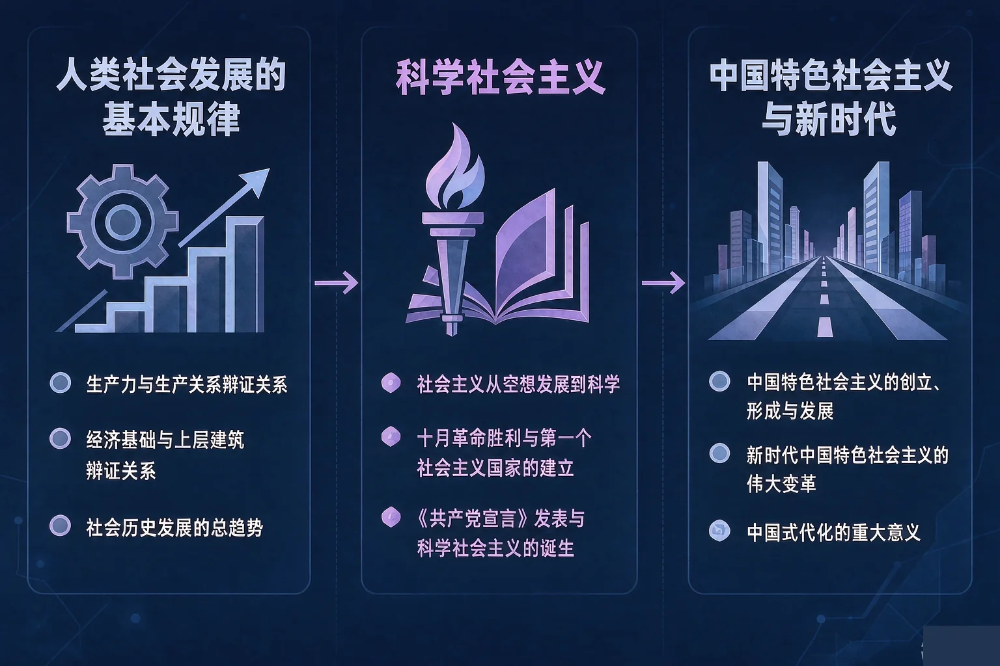
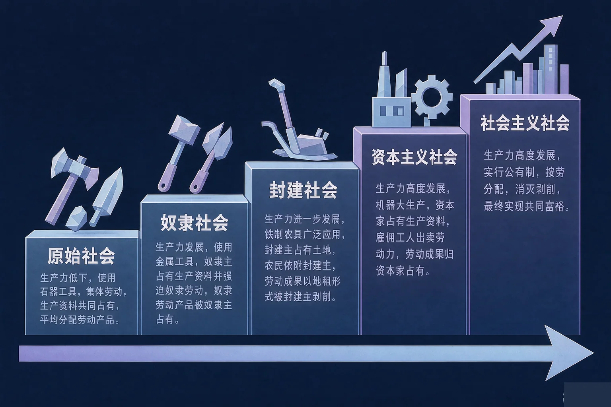
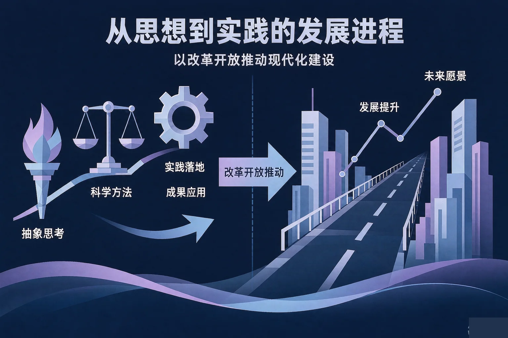

Gallery
v1.0.0 · skill v7.22.0
高中高一 · 中国特色社会主义
中国特色社会主义是从哪里来的？今天的中国又处在什么样的历史方位？

选一个你真正想弄清的问题，后面的活动都会围着它转。
选择或输入后，这节课会围绕你的问题展开。
先凭直觉选一个，选完立刻看到解释——错了也没关系，正好知道要重点听哪里。
1. 推动人类社会形态由低级向高级不断发展的根本原因是：
生产力与生产关系、经济基础与上层建筑的矛盾运动，是人类社会发展的基本规律。错因提醒：常见错误是误认为社会形态更替由人的主观意愿决定。其实生产关系一定要适应生产力状况、上层建筑一定要适应经济基础状况，是不以人的意志为转移的客观规律。
2. 使社会主义由空想变为科学的两块理论基石是：
马克思、恩格斯创立了唯物史观和剩余价值学说，揭示了人类社会发展的一般规律和资本主义运行的特殊规律，从而使社会主义由空想变为科学。错因提醒：有的同学把空想社会主义也当成理论基础，这是搞混了「空想」与「科学」的分界——空想社会主义没有找到现实道路和依靠力量。
3. 关于今天的中国，下面哪一句表述是准确的？
中国特色社会主义进入新时代，这是我国发展新的历史方位；我国社会主要矛盾已经转化为人民日益增长的美好生活需要和不平衡不充分的发展之间的矛盾。错因提醒：常见的误认为是「进入新时代就等于跨越了社会主义初级阶段」。事实上，我国仍处于并将长期处于社会主义初级阶段的基本国情没有变。
为什么要学这一课？
我们已经知道人类社会经历过不同的社会形态（And）；但为什么会这样一步一步变化、背后有没有规律可循（But）；所以这节课先弄清人类社会发展的基本规律，再来看中国特色社会主义从哪里来（Therefore）。
生产力与生产关系、经济基础与上层建筑的矛盾运动，是人类社会发展的基本规律。

一条主线串起来
原始社会 → 奴隶社会 → 封建社会 → 资本主义社会 → 社会主义社会。每一次更替都不是谁规定的，而是生产力发展到一定程度、旧的生产关系再也装不下新的生产力之后的结果。
有的同学误认为社会形态的更替可以随意跳过、由谁想出来就能定下来；也有的同学把「社会形态更替」与「同一社会形态内部的调整」搞混。前者是根本性质的变革，后者不改变社会形态的性质。
🔍 深层理解 换个角度再看一遍这件事，看看能不能说出背后的原理。
看见它：同一块土地上，用石器种地和用铁犁种地，能养活的人完全不同——工具的每一次进步，都会把旧的生产关系顶得松动。
解释它：为什么生产关系落后了就必须变？因为它束缚了劳动者的积极性，也容纳不下新的生产工具。装不下的东西，最后一定会被换掉。
迁移它：这条规律不只属于过去。今天的新技术、新产业不断出现，我们的制度也在不断完善——道理是同一个：让制度跟上生产力的脚步。
下面是五个社会形态的节点，顺序被打乱了。请按时间先后，从最早的社会形态开始点。
从最早的社会形态开始点。
为什么要弄清这一段？
我们已经知道社会发展有规律（And）；但社会主义是怎样从一种美好的设想变成科学的，又是怎样在中国落地生根的（But）；所以这节课要把「从空想到科学、从理论到实践」这条线索理清（Therefore）。
从空想到科学
空想社会主义者看到了资本主义的弊病，却没有找到实现理想社会的现实道路和依靠力量。唯物史观和剩余价值学说的创立，使社会主义由空想变为科学。

有的同学误认为社会主义只是一种美好愿望、没有现实依据；也有的同学把《共产党宣言》的发表与十月革命搞混——前者标志着科学社会主义的诞生，后者实现了从理论到现实的历史性飞跃。
🔍 深层理解 换个角度再看一遍这件事，看看能不能说出背后的原理。
比较它：空想社会主义者和马克思、恩格斯看到的都是同一件坏事，区别在于：一个只说了「不应该这样」，另一个说清了「为什么会这样、靠谁去改变」。
解释它：为什么说只有社会主义才能救中国？因为近代以来各种救国方案都没能改变旧中国的命运，而新民主主义革命的胜利和社会主义制度的确立，真正实现了民族独立、人民解放。
迁移它：这个道理今天仍然成立：判断一条道路行不行，不看它听起来多漂亮，而看它能不能解决这个国家当时最要紧的问题。
先点左边一个概念，再点右边一条你认为对应的准确表述。配对了会给出依据，配错了会告诉你容易混在哪里。
先点左边一个概念。
情境：某校时事小组整理出四条关于新时代的表述。请你当一次校对员，判断哪一条准确、哪一条必须改，并说明依据。
两条必须站得住的结论
中国共产党领导是中国特色社会主义最本质的特征，中国共产党是最高政治领导力量。坚持和发展中国特色社会主义，必须坚持中国共产党的领导，必须坚持中国特色社会主义道路。
最常见的两个错误：一是误认为进入新时代就跨越了社会主义初级阶段；二是把「社会主要矛盾的变化」和「基本国情的变化」搞混——主要矛盾变了，基本国情没有变，这两句话必须同时说清楚。
先凭直觉选一个，选完立刻看到解释——错了也没关系，正好知道要重点听哪里。
1. 关于人类社会发展的基本规律，下面哪一句表述准确？
生产关系一定要适应生产力状况、上层建筑一定要适应经济基础状况，是社会发展的客观规律。错因提醒：常见错误是误认为社会形态更替可以随意选择。其实它由生产力发展水平决定，生产力是最活跃、最革命的因素。
2. 关于科学社会主义，下面哪一句表述准确？
唯物史观和剩余价值学说的创立，使社会主义由空想变为科学；一八四八年《共产党宣言》发表，标志着科学社会主义的诞生。错因提醒：有的同学把《共产党宣言》的发表和十月革命搞混了——后者实现了科学社会主义从理论到现实的历史性飞跃。
3. 关于中国特色社会主义进入新时代，下面哪一句表述准确？
中国特色社会主义进入新时代，这是我国发展新的历史方位；我国社会主要矛盾已经转化为人民日益增长的美好生活需要和不平衡不充分的发展之间的矛盾；总任务是实现社会主义现代化和中华民族伟大复兴。错因提醒：要小心「主要矛盾变了」被误认为「基本国情变了」。我国仍处于并将长期处于社会主义初级阶段的基本国情没有变。
先点一个现象，再判断它主要说明的是哪一方面。四个都判断完，你就有了一张属于自己的方位卡。
先点上面一个现象。
把你的判断写下来：
从四个现象里挑一个你最有感触的，用自己的话写一写：它为什么能说明我国社会主要矛盾已经转化？
先凭直觉选一个，选完立刻看到解释——错了也没关系，正好知道要重点听哪里。
1. 下列事件中，标志着我国确立社会主义基本制度、完成中国历史上最深刻最伟大的社会变革的是：
一九五六年社会主义改造基本完成，确立了社会主义基本制度，完成了中国历史上最深刻最伟大的社会变革。错因提醒：容易把「站起来」和「制度确立」搞混——一九四九年中华人民共和国成立实现了民族独立、人民解放，为走上社会主义道路创造了前提。
2. 关于改革开放，下面哪一句表述准确？
改革开放极大解放和发展了社会生产力，使中国大踏步赶上了时代；中国特色社会主义正是在改革开放中创立、发展和完善起来的。错因提醒：常见的误认为是「现代化就是照搬别国道路」。必须坚持中国特色社会主义道路，坚定道路自信、理论自信、制度自信、文化自信。
3. 关于实现中华民族伟大复兴的中国梦，下面哪一句表述准确？
实现中华民族伟大复兴是中华民族近代以来最伟大的梦想，必须走中国道路、弘扬中国精神、凝聚中国力量；中国梦的本质是国家富强、民族振兴、人民幸福。错因提醒：要注意一个根本立场：中国共产党领导是中国特色社会主义最本质的特征，实现中华民族伟大复兴必须坚持中国共产党的领导。
一句口诀：社会形态步步高，两条规律要记牢；空想变科学、理论到实践，救中国靠社会主义；改革开放开新局，特色道路上大道；主要矛盾已转化，初级阶段没有变。
给别人讲一遍：请用「基本规律」「社会主义」「中国特色社会主义」这三个词，给家里人讲清楚：中国为什么会走上社会主义道路，又为什么必须坚持走中国特色社会主义道路。
再动一动手：写一写你身边最能说明「社会主要矛盾已经转化」的一个现象，连同你的分析一起收进本子里。
三层练习，做完第一、二层就算通关；第三层留给愿意继续探索的同学。
⭐ 基础巩固（必做）
⭐⭐ 能力应用（必做）
⭐⭐⭐ 迁移挑战（选做）
左边是学它之前要先会的，右边是学会之后可以继续探索的，下面是同一领域的伙伴知识。
图谱正在加载：首次进入需下载知识索引（约 1–3 秒），加载完成后本行会自动消失。